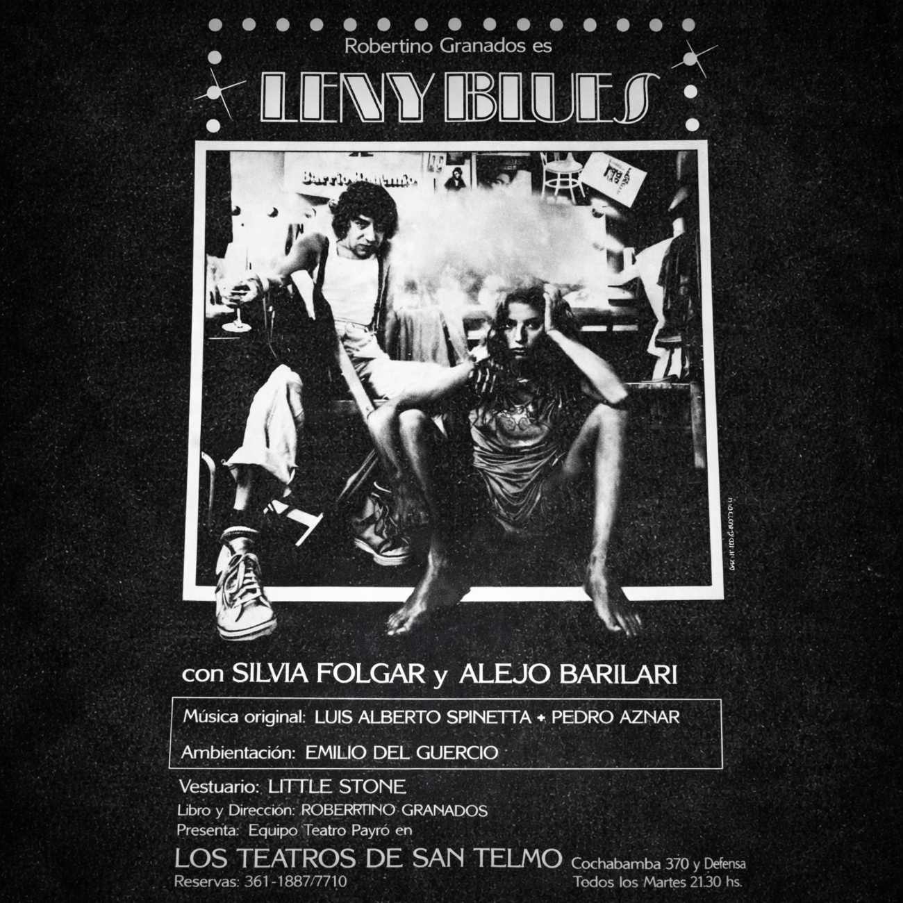

1981 - Teatro del Este, Buenos Aires

La obra “Lenny Blues”, estrenada alrededor de 1980–1981, constituye una pieza casi oculta pero profundamente reveladora del cruce entre el teatro y el rock argentino. Escrita y dirigida por Robertino Granados, la obra tomaba como punto de partida la vida del comediante estadounidense Lenny Bruce, figura emblemática de la contracultura. En el contexto argentino de la época, Bruce funcionaba como un símbolo potente de libertad de expresión frente a la censura.
La puesta se llevó a cabo en el Teatro del Este, integrando actuación, música y una narrativa fragmentaria. Uno de los aspectos más destacados fue su música original, compuesta en colaboración por Luis Alberto Spinetta y Pedro Aznar. El llamado “Tema de Lenny” funcionaba como leitmotiv de la obra, otorgándole una identidad musical propia y experimental.
A pesar de su riqueza artística, la música de Lenny Blues no tuvo una edición formal, convirtiéndose en un material de culto. La participación de Spinetta y Aznar evidencia cómo ambos músicos exploraban nuevas formas de narración y sensibilidad más allá del formato discográfico tradicional.
Material difundido con fines culturales y de preservación histórica.